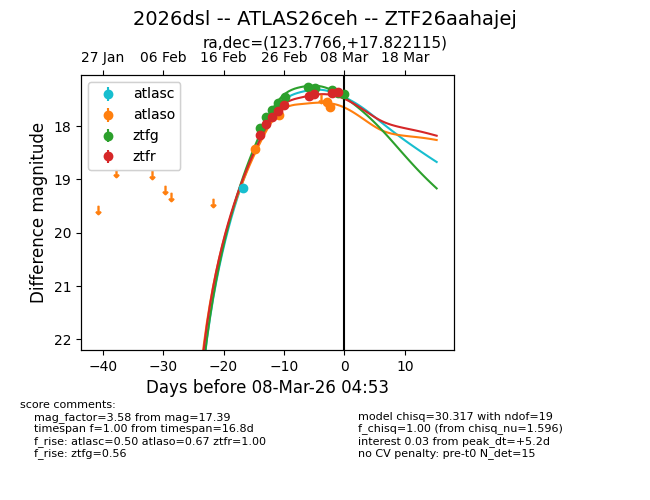
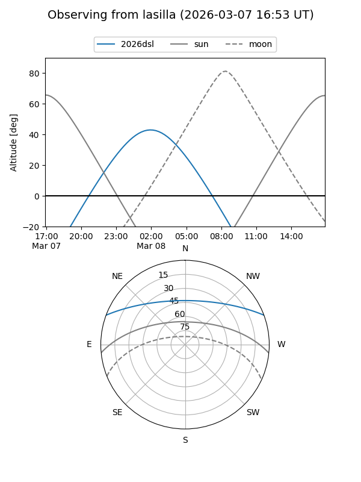
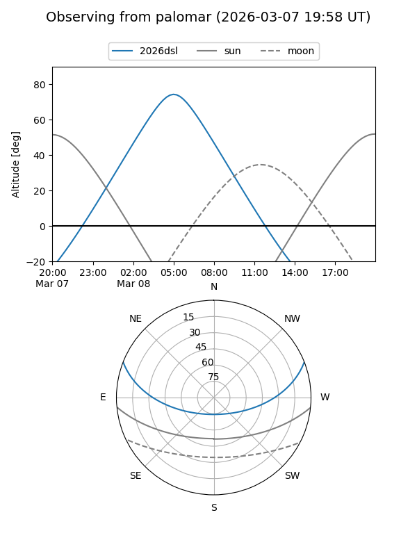
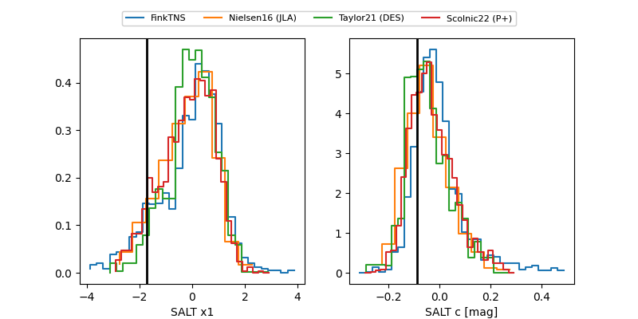

2026dsl
Target 2026dsl at 2026-03-08 04:54
Aliases and brokers:
FINK: link
Lasair: link
ALeRCE: link
TNS: link
YSE: link
alt names
ZTF26aahajej (ztf,fink_ztf)
2026dsl (tns,yse)
ATLAS26ceh (atlas)
Coordinates:
equatorial (ra, dec) = 123.7766,+17.82211
equatorial (HMS+DMS) = 08:15:06.39,+17:49:19.61
galactic (l, b) = (205.4107,+26.23494)
Flags:
Photometry:
last atlasc=19.15, atlaso=17.63, ztfg=17.39, ztfr=17.36
1 atlasc, 4 atlaso, 10 ztfg, 9 ztfr detections
Lightcurve

Visibility


Additional plots
